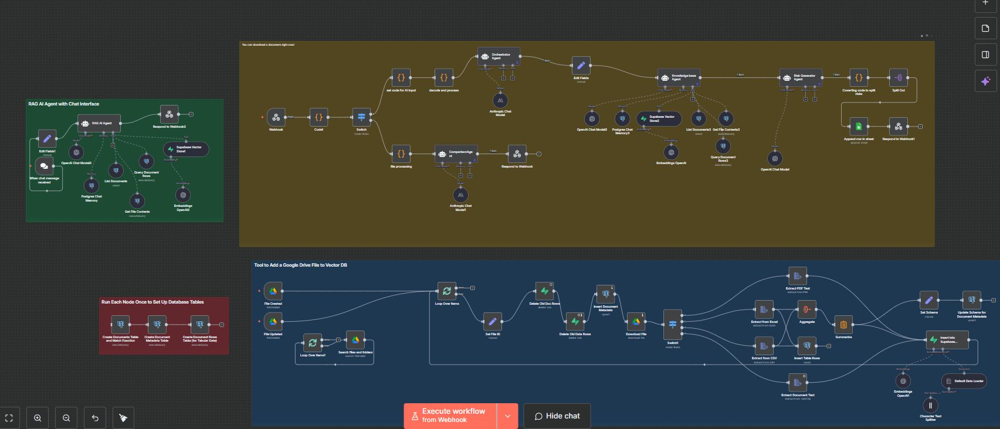
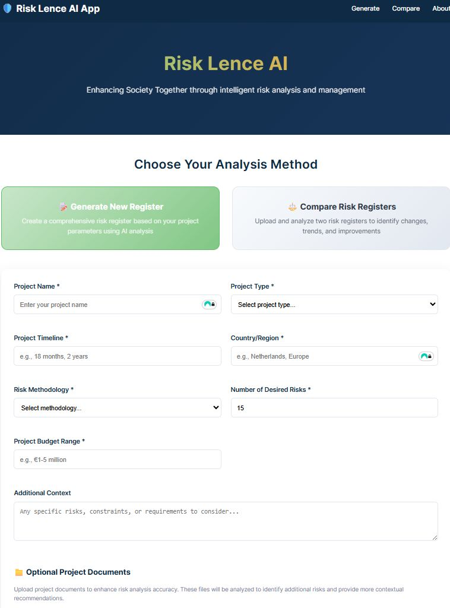

We bouwden een AI-assistent die een projectbeschrijving omzet in een concept-risicoregister, zodat risicomanagers elk nieuw project met een stevige basis beginnen in plaats van een leeg blad.
Resultaat: een nieuw project starten ging van ongeveer 8 uur werk naar 3.
Elk nieuw infrastructuurproject begint met een leeg risicoregister. Normaal gesproken betekende dat oude registers doorspitten, relevante risico's overnemen en nieuwe bedenken. Een risicomanager was hier zo'n 8 uur mee bezig voordat de echte beoordeling kon beginnen.
We bouwden een AI-assistent op n8n, gekoppeld aan een gestructureerde database met bekende infrastructuurrisico's. Op basis van een beschrijving van het nieuwe project zoekt hij relevante risico's uit eerdere projecten en schrijft hij een concept-risicoregister, met oorzaken en maatregelen, direct in een Excel-bestand dat klaarstaat voor de risicomanager.


Een nieuw project starten kost nu ongeveer 3 uur in plaats van 8: zo'n 5 uur tijdwinst per project. De assistent vervangt het oordeel van de risicomanager niet. Hij haalt het lege blad en het kopieerwerk weg, zodat de risicomanager de tijd besteedt aan beslissingen in plaats van data-invoer.